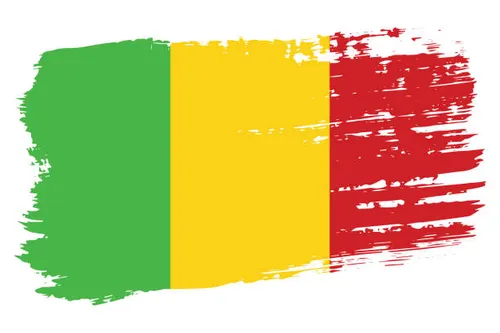

I am secound-year student at Illinois insitiute of Technology.
I am here studing Cybersecurity & Information Technology.
I am a Chicago native born and raised in the South Side of Chicago.
My nationality is Malian and my home country is Mali.

NSBE is one of the largest student-run organizations in the U.S. focused on helping Black students succeed in engineering, tech, and STEM careers — from college all the way into industry leadership.
I am E-board member of NSBE as the Media Chair, In my role I help organize events and workshops for students to learn more about engineering and technology. As well as create flyers for different events and activities the our organization host and post them around campus to bring out reach and build commnity within NSBE.
CyberHawks is a student organization at Illinois Institute of Technology that focuses on cybersecurity and information technology. The organization provides students with opportunities to learn about cybersecurity through workshops, competitions, and networking events. As a member of CyberHawks, I have participated in various cybersecurity competitions and have gained valuable experience in the field.
I just competed in 2026 CCDC competition where I was able to work with my team to solve various challenges related to network security and system administration. I was in charge of managing AD/DNS DC here I was able to gain hands-on experience in managing and securing Active Directory and DNS servers, which are critical components of any organization's IT infrastructure. Through this experience, I have developed a deeper understanding of cybersecurity concepts and best practices, and I am excited to continue learning and growing in this field.